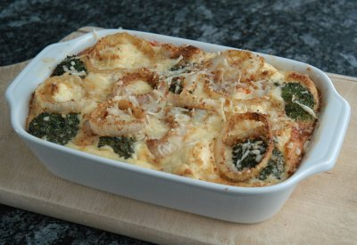

| Zutaten für 4-6 Portionen | |
| 1 | rote Peperoni |
| 1 kg | Gemüse (Rüebli, Blumenkohl, Broccoli) |
| 2 dl | Schlagrahm |
| 2 dl | Milch |
| 4 | Eier |
| 150 g | geriebener Käse (z.B. Emmentaler) |
| Salz, Pfeffer | |
| geriebene Muskatnuss | |
| 2 | Zwiebeln |
| 2 El | Butter |
| 2 El | Paniermehl |
Rüsten: 15 Minuten
Backen: 35-40 Minuten
Backofen auf 200°C vorheizen.
Eine flache Auflaufform fetten.
Peperoni putzen, waschen und in Streifen schneiden. Gemüse waschen und putzen. Die Rüebli in Scheiben schneiden, Blumenkohl und Broccoli in Röschen teilen. In die Gratinform geben.
Rahm, Milch, Eier und die Hälfte des Käses verquirlen. Mit Salz, Pfeffer und Muskat abschmecken. Ueber das vorbereitete Gemüse giessen und mischen.
Zwiebeln schälen und in Ringe schneiden. In einer Pfanne die Butter zerlassen, Paniermehl untermischen. Zwiebelringe in den Bröseln wenden.
Im Ofen (Gas 3; Umluft 180°C) zunächst 20 Minuten backen.
Dann die panierten Zwiebelringe auf dem Auflauf verteilen, den restlichen Käse darüber streuen. Weitere 15-20 Minuten backen, bis die Oberfläche goldbraun ist.
Als Werbung versandte Rezeptkarten.
Schmeckt eigentlich ganz gut. Ich habe gerne den Käsebiss vom Käse im Guss. RE 27.10.2007
@LINKBACK_TAG@ @WAKELOCK@